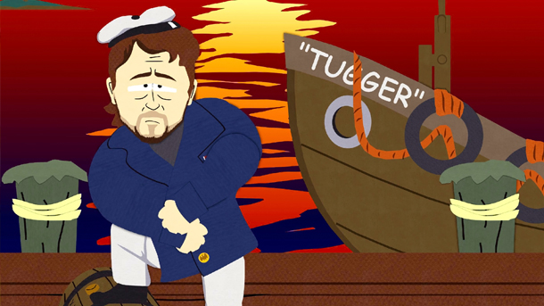

Travel Arrangements
The Island is only accessible by boat. The Following locations offers ferries to the Island at the times listed below

-
Port Moresby
- Mon-Fri 8:00 a.m.,6:00 p.m.
- Sat-Sun 12:00 p.m.
-
Solomon Islands
- Mon-Fri 9:00 a.m.,4:00 p.m. 6:00 p.m.
- Sat-Sun 12:00 p.m.
-
Brisbane
- Mon-Fri 10:00 a.m.,5:00 p.m.,7:00 p.m.
- Sat-Sun 12:00 p.m.
Return to Homepage